January 15, 2014 (1.5 hour): Met as a team to discuss and start writing the preliminary project proposal.
January 16, 2014 (1 hour): Finished editing and writing the preliminary project proposal. Mostly did the research on already existing products out.
January 18, 2014 (2 hour): Helped design and put together the website. Mostly the layout and graphics of what the site will look like.
WEEK 01 SUMMARY Accomplishments: Put together the website and finished the preliminary project proposal. Weekly Work Total: 4.5 hours Project Work Total: 4.5 hours
Week 02
January 26, 2014 (1 hour): Finished up homework 1 including making the schedule.
WEEK 02 SUMMARY Accomplishments: Finished up homework 1 as a team. Weekly Work Total: 1 hours Project Work Total: 5.5 hours
Week 03
January 29, 2014 (30 minutes): Started work on the PCB tutorial.
January 30, 2014 (1 hour): Finished PCB tutorial.
WEEK 03 SUMMARY Accomplishments: PCB tutorial was completed. Weekly Work Total: 1.5 hours Project Work Total: 7 hours
Week 04
February 5, 2014 (2 hours): Came up with multiple options of how to build the mechanical design of the project that are listed below with links to the project description.
Option 1 (use this and cut holes out of plastic -> towards idea of rotating disco ball or use a wiffle ball): http://www.nationalbuildersupply.com/progress-lighting-white-1+light-post-light-p5446+60/p12892?utm_source=shopping&utm_medium=cse&utm_campaign=Progress%20Lighting&utm_term=P5446-60
Option 2 (disco ball with lights flashing at it):
http://www.youtube.com/watch?v=Qnm_IXD6tNM
Option 3 (different flashed in a ball):
http://www.flickr.com/photos/macetech/4235536612/in/set-72157623116877654/
Option 4 (string of lights):
http://dingweilighting.manufacturer.globalsources.com/si/6008847873232/pdtl/Christmas-light/1064677996/70cm-LED-Christmas-Ball-Motif-Lights.htm
Option 5 (half circle idea):
http://www.dhgate.com/product/christmas-new-led-star-crystal-ball-magic/146611479.html#s1-5-1|1767851088
Option 6 (design round object with ping pong balls or glue to inside of a plastic circle from option 1):
http://www.uchobby.com/index.php/2008/03/03/rgb-led-ping-pong-ball-light/
Option 7 (one single sphere that spins fast enough that creates circle):
http://www.zigwire.com/projects/sphere/sphere.php
Option 9 (lasers - but on a bigger scale and prob can use LEDs rather than lasers and have it sit on a tray thing and spin the tray):
http://www.slashgear.com/diy-laser-ball-is-21st-century-human-cat-toy-17196054/
Option 10:
Using a 6" diameter pipe. You could drill holes in the exterior. You could put it
On rollers. The rollers, could have a motor attached and the lights could go in the middle.
February 6, 2014 (1.5 hour): Met as a team to complete hw 3. Finalized a design that we wanted for the external system. With the design, we determined that we will need to 3D print a part in order to mount the disco ball on the motor. Many major components were selected including using an LED driver to help with controlling the 3 phase LEDS. A picture of the initial design is pictured below:
WEEK 04 SUMMARY Accomplishments: Settled on design idea for the project as well as finished hw 3. Weekly Work Total: 3.5 hours Project Work Total: 10.5 hours
Week 05
February 10, 2014 (1.5 hours): Started hw 4 of packaging and compiled a list of all the parts and how much each weigh to get an approx weight for our project of 6.5 lbs.
February 12, 2014 (3 hours): Completed the CAD drawing of our design as well as the PCB footprint. Pictures displayed below:
February 13, 2014 (8 hours): Figured out how everything is going to work together, so basically configured a basic schematic. Most of the parts were switched and changed at this point. The motor that was originally selected was too powerful and too big for the design, so we decreased the size and power to a simplier stepper motor. Due to the microcontroller needed 3.3V, the Raspberry Pi needing 5V, and the motor needing 12V one of the biggest problems was faced was how to get that all supplied to the parts correcty including using a 12V power supply. The schematic is drawn below:
February 12, 2014 (1 hour): Completed hw 4.
WEEK 05 SUMMARY Accomplishments: Finished homework including the CAD drawing and inital schematic draw ups. Weekly Work Total: 13.5 hours Project Work Total: 25 hours
Week 06
February 18, 2014 (4 hour): Started drawing up the schematic layout on eagle. Had to create parts for the LED driver, Microcontroller, LED, and the voltage regulator.
February 19, 2014 (3 hour): Met as a team in lab and got feedback on the schematic I drew up. Originally, I was using a LM7805 and a capacitor to drop the voltage from 12V to 5V and then a voltage regulator to drop the voltage from 5V to 3.3V. However, the transistor would cause a lot of heat consumption, so the 12V to 5V will now be regulated by a switch mode with a heat sink..The schematic continued to be worked on getting most of the resistors and capacitors selected.
February 20, 2014 (8 hour): Drew up and added the parts to the eagle schematic. Had to draw up the microcontroller, LED drivers, LEDS, and 2 voltage regulators. By drawing these, I had to finish figuring out the rest of the circuitry.
February 21, 2014 (10 hour): Finished figuring out the pins and circuitry. Then drew up all the circuitry to the right pins in which the LED driver was to i/o pins and i2c pins. The rpi was connected by sdi,sdo,sclk and also had to be connected by audio to a analog pin. The motor was connected to PWM ports. The LED driver had to be connected to the SDI,SDO,SCLK as well, so a chip select was enabled since the micro is running everything it will have to switch between talking to the raspberry pi and the LCD.
External parts to PCB board schematic:
PCB board schematic:
WEEK 06 SUMMARY Accomplishments: Figured out the rest of the parts of the project. Also, figured out the pins and how to draw everything up and drew up the schematic on eagle. Weekly Work Total: 25 hours Project Work Total: 49 hours
Week 07
February 24, 2014 (1 hour): Started the PCB footprint by places all the parts on the board in a manner that you can see the wires connecting.
February 25, 2014 (5 hours): Re-did the layouts of the LED driver, micro, and both voltage regulators so they were to size. We even took the part and layed it out on the sheet to make sure that they were the correct dimensions. While we did this, we realized that the the leads on the the layout had to be a little bit longer than specificied to make it easier for later on when we have to solder the parts onto the LED driver. Another thing that was accomplished was the values of the resistors were calculated in order to drop 5V down to 3.3V of the MAX856CSA. I also changed the power to drop 12V to 5V to a more genaric part of a LM2675 because that was what I discussed would be the best regulator with the great power being dissipated in the circuit. Added LED flashing to see the "heartbeat" of the microcontroller to make sure the I/O pins are still working. An RJ11 connector was added to the programming pins to allow the micro to be programmed.
February 26, 2014 (2 hours): Kept placing and grouping parts on the PCB board layout. These items were grouped to allow for the least amount of crossing of wires and the orientation of where everything is being mounted externally that will be connected to PCB board. Once, that was finished the traces were simply layed out.
February 27, 2014 (4 hours): Kept going with PCB layout and traces. Had to keep analog and digital ground seperate from each other until combined at the very end for the power supply. Followed Sparkfun's library for specifications on the PCB layout, so they are able to design it at the fabrcication shop correctly. Also, I changed the MAX856CSA to a LM1117 since the MAX856CSA was a step-up regulator when we needed a low dropout regulator which was the LM 1117.
March 1, 2014 (1 hour):Met briefly to break up powerpoint slides up to figure out what each person was going to talk about.
WEEK 07 SUMMARY Accomplishments: Changed parts around on the PCB board including dimensions of the LED driver, Microcontroller, and both the voltage converters. Circuitry was improved and looked over by team. Started PCB layout of the traces. Weekly Work Total: 13 hours Project Work Total: 62 hours
Week 08
March 2, 2014 (2 hour):Started building the slides for the presentation. Broke up the presentation even more. I was in charge of talking about the mechanical design and the schematic.
March 3, 2014 (2 hour): Finished building the slides for the presentation. Made a couple changes to our schematic including changing a 0 ohm resistor to connect gnd and agnd together because those have to stay seperate until the very end. Schematic that was finally presented:
March 4, 2014 (4 hour): We practiced our design review together. Made a couple changes to our powerpoint because we were missing key points. After design review, we corrected a few things including adding a resistor to the heartbeat LED, made mounting holes on PCB board, fixed board lines so they were straight, and changed the inductor and capacitor so they would match the parts we had in stock.
March 6, 2014 (2 hour): Started researching into voltage regulators for power circuit. Currently our power circuit was not going to work since we need to output of at least 3 A in order for the LEDs to work and the current voltage regulators only outputed 1.5 A.
WEEK 08 SUMMARY Accomplishments: Succesful presentated our progress at design review and started to fix the feedback we received. Weekly Work Total: 10 hours Project Work Total: 72 hours
Week 09
March 10, 2014 (5 hour): Discussed the need for logic level translators. This is because the LED driver runs on 5V, but we needed a 3.3V logic supply. After thinking about our options, we realized that we could sink the LEDs and have the supply voltage of 5 V to LEDs and 3.3V to LEd driver so that the logic would work and also that we would only have to use 1 switch mode regulator to power enough current to the system. We then thought that the motor would need a voltage regulator because of the needed logic voltage and ultimately we decided that we would not need one because the voltage we were going to supply would allow the motor to realize if it was running high or low. Ultimately, the power circuit was changed. We used a switch mode regualtor of a LM2596s from 12V to 5V to maintain the current needed to power the LEDs. Because we changed that the LEDs were going to be powered at 5V not 3.3V, we could use a LM1117 to drop the voltage from 5V to 3.3V which is recommended because many problems occur with a switch mode regualtor.
March 11, 2014 (7 hour): Met with Meyer and we discussed various things with the schematic. The audio circuit needed to be changed since I had two envelope detectors, only one was needed. Since we did not have all the parts the test it, a 10K potentiometer was added just in case we need it to help us to make the audio circuit to work. Even thought the motor driver would work with the logic voltage of 3.3V, a voltage translator from 3.3V to 5V was included to be safe. For the LEDs, the schematic does not need to change, but the anodes of the LEDs will connect to power and as for the LED driver when you drive it low LEDs will turn off. For the LM 2596s, the capactiors and inductors need to be exactly what the data sheet says and that proved to be difficult since some of the parts that fit it would not be in stock at the store. But it was ultimately figured out and the schematic was finished:
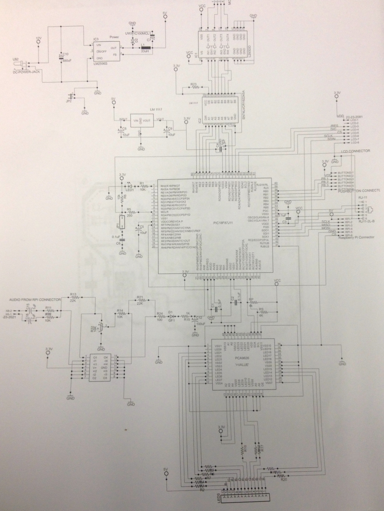
March 12, 2014 (1 hour): Met as a team to make sure the schematic looked good and if anything else needed to change, but nothing was needed besides an inductor had to change because it was not in stock online.
March 13, 2014 (3 hour): Some more parts came in and checked that with the PCB print out. Some parts needed to change to fit, but for the most part everything fit. A bill of materials was printed out and all items were collected from parts store and if they were not in parts store they were ordered, so all parts should be here besides the 3D part.
March 14, 2014 (1 hour): PCB was submitted and I was named the main contact for it if there was anything wrong with it. The PCB ended up being 4.94 inches by 3.75 inches.
WEEK 09 SUMMARY Accomplishments: Schematic was completed and PCB was ordered. Weekly Work Total: 17 hours Project Work Total: 89 hours
Week 10
WEEK 10 SUMMARY Accomplishments: Spring break, was away from campus. Weekly Work Total: 0 hours Project Work Total: 89 hours
Week 11
March 23, 2014 (2 hours): Started drawing the 3D part for the mechanical design of connectign motor to the disco ball and met as a team to figure out the plan for rest of semester. I still have mechanical design, circuit testing, and soldering to do.
March 24, 2014 (3.5 hours): Designed the 3D part. Put parts on the PCB printout and the tri-state voltage and the LM1117 do not fit. However, where the parts were placed there is plenty of room to solder wires to connect the components. Finally, the audio circuit prototype was built:
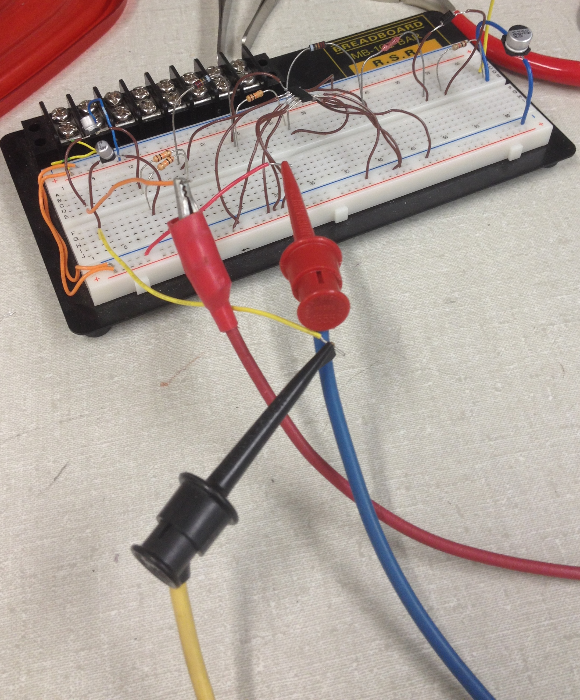
March 25, 2014 (1 hour): Drew on the enclosure of where we want to drill things out for the LCD, motor, and pushbuttons to be places. I also worked on the CAD drawing of our 3D part.
March 26, 2014 (4 hours): Two parts (LM1117 and the logic level translator was the wrong package), so we found the correct packages and ordered the new parts. I also worked on the audio circuit. With the audio circuit, we have something wrong with the soldering joints of the op-amp so we were going to need to get a protoboard to solder it to. Finally, the 3D part was fixed because the cylinder was too thin and would never hold on the motor shaft. 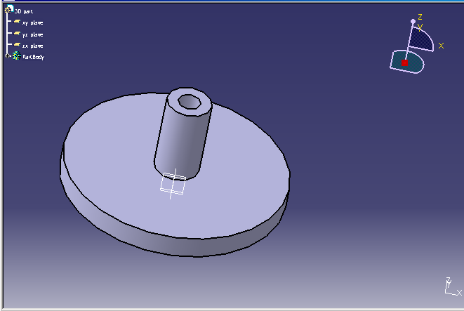
March 27, 2014 (4.5 hours): Found a protoboard and soldered the LM264 to the proto board, PCB came in, and figured out we made a mistake on the tracing. The I2C pins are not connected to the right ports on the micro and the VDD and VSS were switched when connecting to power and ground. To fix these issues we are going to have to break the trace and fly wire. With the I2C pins we will fly wire from the resistors and the VDD and VSS we will go from the via.
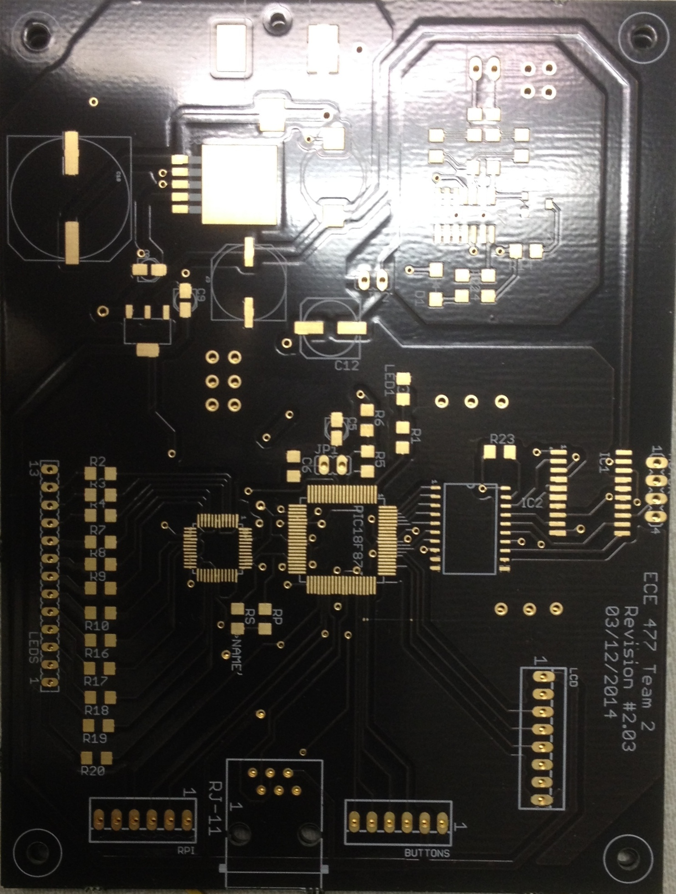
March 28, 2014 (3.5 hours): Submitted the request for a 3D printed part. Went back to debugging the audio circuit in which the op amp would work occasionaly but could not get the diode to work. Still needs lots more work on audio circuit. I also searched how to do the motor code on the microcontroller to control the speeds of the motor and it will be done by sending a pulse wave of a square wave on the 4 wires wires all once at a time and the frequency of sending pulses controlls the speed and the driver these are sent to our programmed with logic pins that will determine direction of movement or if moving at all and then all this data is sent to the 4 wires of the motor.
March 29, 2014 (3 hours): Soldered the power circuit with the 12V to 5V voltage regulator and tested it overnight and it works with a constant 5.02999 V output. Waiting on the LDO to come in so I can finish the power circuit. Also, learned how the webapp is being built and will start doing the CSS for the webapp.
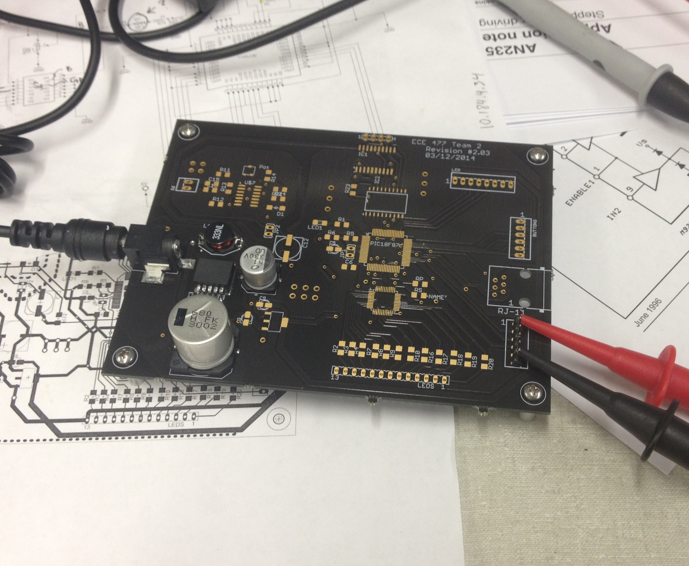
WEEK 11 SUMMARY Accomplishments: Submitted 3D part to be printed and is done, just needs to be cleaned and got the power circuit to work and soldered onto board. Weekly Work Total: 21.5 hours Project Work Total: 110.5 hours
Week 12
March 31, 2014 (4.5 hours): Still debugging audio circuit. The double amplifier and the diode is not working. The diode is not working due to such a small amplitude gain of .135 V so we are trying to get a higher gain. Also, the 3D part was picked up and cleaned off and installed on the motor. 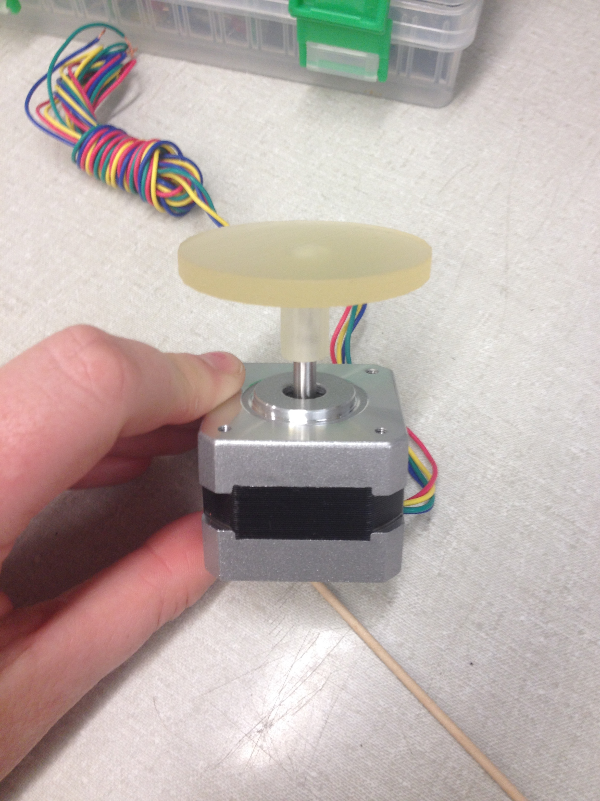 Finally got the audio circuit to work. The initial resistor had to be tied to ground and the envelope detector the resistor needed to be in parallel with the capacitor. This gave a voltage range from 0 to about 1.2V of the signal from the audio. The new circuit and the output signal is depicted below.
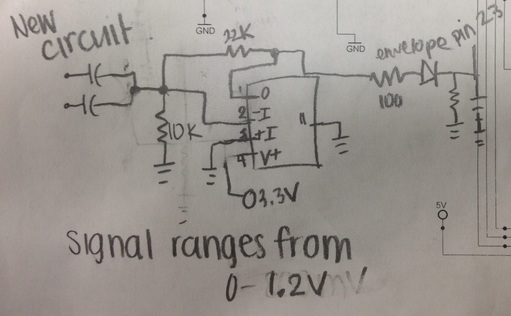 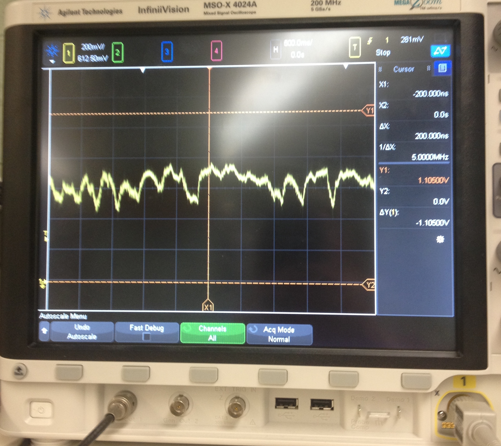
April 1, 2014 (2 hours): Met as a team to brainstorm what was still needed to do in order to finish the project. Came up with that we needed to do a lot of testing before the board comes in to make sure that we built our circuit properly.
April 2, 2014 (6 hours): Soldered the LED driver to a protoboard. The LED driver was tested and was still not working. Assumptions are due to the wires not being placed correctly, so we are going to wait until the board comes in. Did some more debugging into the audio circuit and what was figured out was that the op amp needed both + and - power in order to operate so a voltage divider with a resistor was installed to get power coming from the - power and the + power.
April 3, 2014 (4 hours): Even though the op amp started to work, the signal was still not something that the software lead said he could work with to get beat detection. From there, I decided to take out the envelope detector since I was not getting a good sine wave and incorporated a potentiometer. This enabled the output of the audio to only drop frequencies of a certain threshold depending on the potentiometer. We played with the potentiometer value until we got a good amount of drops in frequency. This was a detection that the software lead could deal with by depending on how low the frequency dropped determined how fast the lights were going to blink.
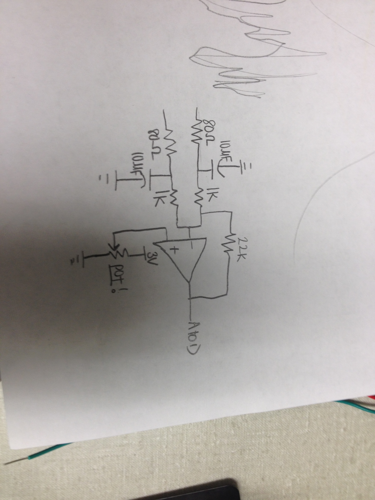
WEEK 12 SUMMARY Accomplishments: This week was primarly focused on the audio circuit. The audio circuit finally works in a manner that the software leads could deal with. To get it to this point, the envelope detector was eliminated and a potentiometer was installed. Weekly Work Total: 16.5 hours Project Work Total: 127 hours
Week 13
April 7, 2014 (4 hours): Soldered motor driver to proto board. Also soldered the LM1117 to the board. When doing so and checking to making sure I got the correct ouput, I realized we had ordered the wrong part. We were getting an ouput of 2.5V rather than our 3.3 V. So a new LM1117 was ordered. While debugging the motor driver, it was realized that there was something wrong with our PWM channel on the software side.
April 9, 2014 (0.5 hours): With the motor driver, something was still not working. So after checking the motor circuitry, I realized that it was bad soldering in which we did not have continuity. Therefore, I resoldered the motor driver in which it worked.
April 11, 2014 (.5 hours): Our new 3.3V output LM1117 came in and therefore I soldered the circuitry that dropped our 5V down to 3.3V. That circuitry was tested for 24 hours and there was still a 3.3V output.
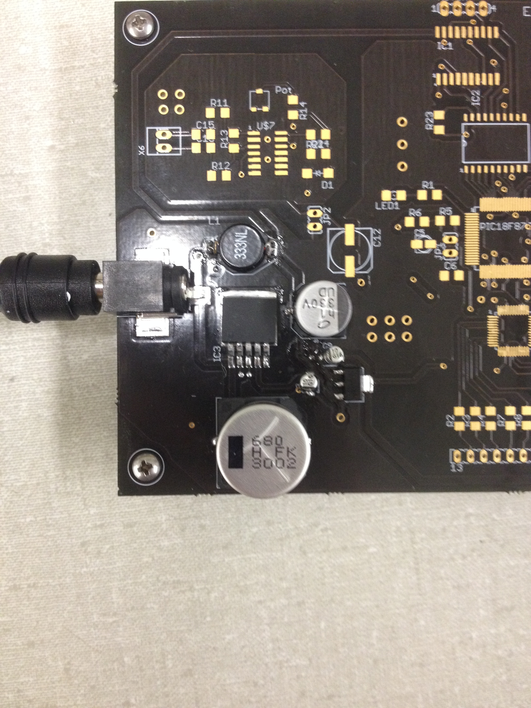
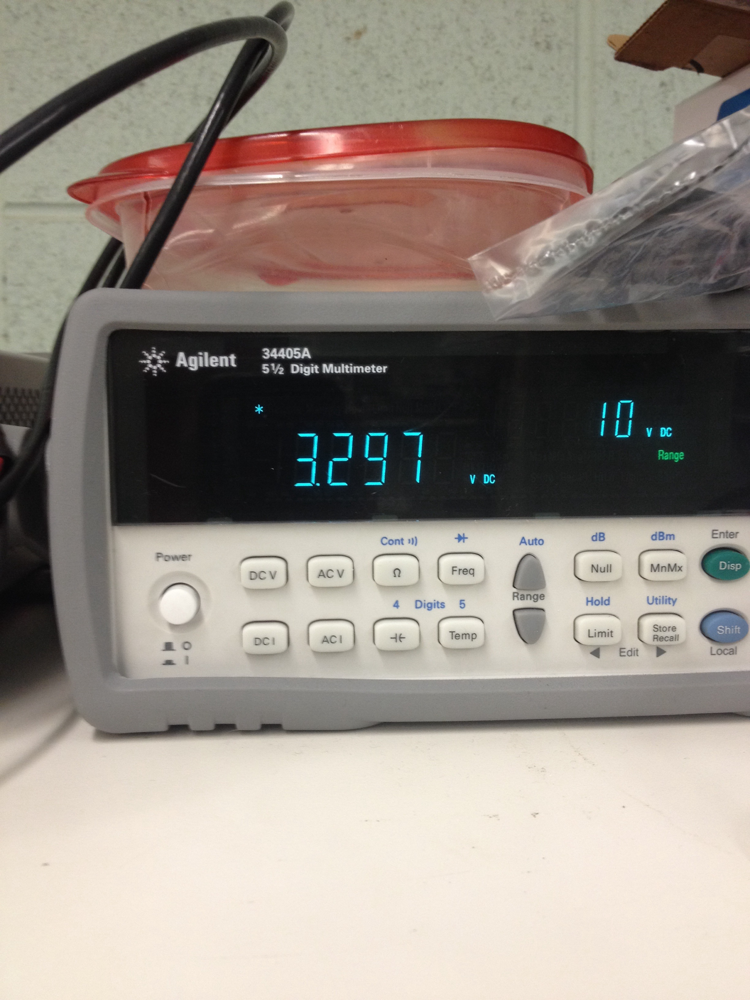
WEEK 13 SUMMARY Accomplishments: This weeks accomplishments were a lot of soldering in order to test the LED driver as well as the motor driver. We got to motor driver to work, however we did not get the LED driver to work. The LED driver was not working due to wrong initializations on the software side. Finally, the 5v - 3.3V supply was tested overnight and it still worked. Weekly Work Total: 5 hours Project Work Total: 132 hours
Week 14
April 13, 2014 (4 hours): With the 3.3V working, I soldered on the micro as well as all the bypass capacitors. With this board, our VDD and VSS were wired wrong which would have caused a short in the circuit. This means that I had to break a trace and fly wire the two micro output correctly so a short would not be created. While doing this, I realized that the VDD and VSS are internally connected within the micro.
April 14, 2014 (5 hours): Once we connected the RJ11 connector to the board, we realized that we still could not program the micro. After investing and looking at the other RJ11 connector we had, we realized that our RJ11 connector was connected backwards. Therefore, I had to fly wire it onto a proto board in order for the connections to work properly. I also visited the afl lab to start working on the packaging. In order to work in the afl lab, you must get registered online first and take a quiz on the machines.
April 15, 2014 (7 hours): Multiple hours were spent debugging why our micro cannot connect to target device. After trying multiple different things including grounding a pin that was not grounded, checking our bypass capacitors, we ended up soldering up a micro on a protoboard.
April 16, 2014 (1.5 hours): Once the micro was on the protoboard, we tested it again. This time we had communication with the micro. Therefore, when I broke the trace between VDD and VSS, it was not broken fully when we first went to power it up which caused a short and fried our microcontroller.
April 17, 2014 (3 hours): Submitted CAD drawings to afl lab for the drilling of our box. The new board came in. Therefore, I soldered the 12 - 5V supply circuit and tested it for 7 hours and it worked. Then I soldered on the 5v - 3.3V circuit and ran the power overnight and worked outputted 3.3V we expected.
April 18, 2014 (2.5 hours): Once we got both the power supplys working, I soldered on the micro. Soldering on the micro is very difficult since you have to line up the traces under a microscope since they are so small.
WEEK 14 SUMMARY Accomplishments: This week we got our new board in and got both our 5V and 3.3V supply working. We also got communication with our microcontroller. Weekly Work Total: 23 hours Project Work Total: 155 hours
Week 15
April 20, 2014 (3 hours): Soldered motor driver and the voltage translator. Also a value was calculated for R23 which was 10Kohms to make sure the LEDs would all light up and take the least amount of current.
April 21, 2014 (1 hour): After soldering on the motor, we got the motor to start spinning at variable speeds through software.
April 22, 2014 (2.5 hours): Redesigned the CAD drawings because I was going to be working on a machine that forced me to insert numbers to drill the part. I orginally thought I could get the job done with a horizontal band saw but because of our box, I had to use a drill.
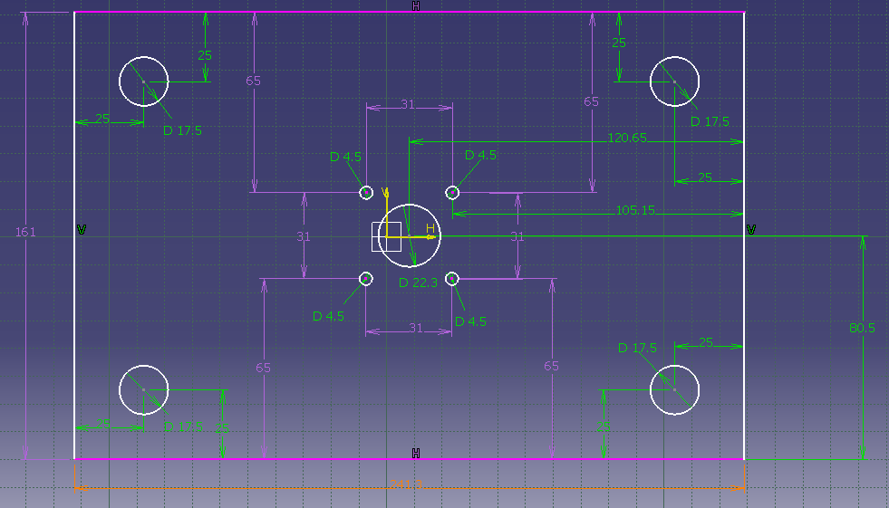
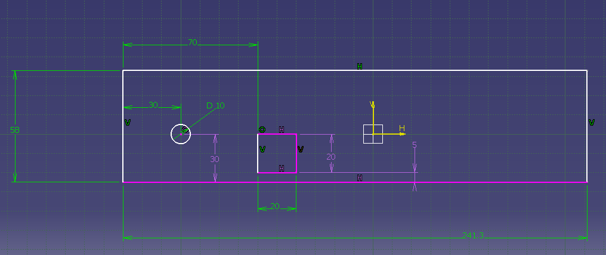
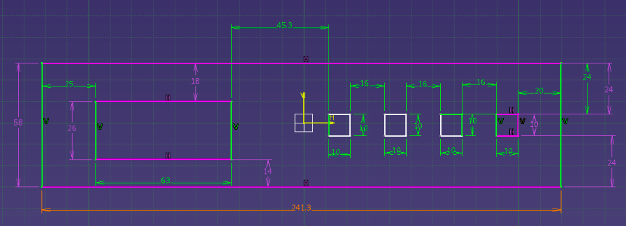
April 23, 2014 (1 hours): Mad a couple of CAD drawing changes to make sure I was in the correct units.
April 24, 2014 (8.5 hours): Drilling the box. Had to insert all the dimensions in order to get the part drilled exactly. I also had to put the wood inside the box in order for the box to be drilled. In order to do the holes for the push buttons, we drilled a circle hole and filed the sides so the buttons could fit inside the hole.
WEEK 15 SUMMARY Accomplishments: Got the motor working as well as got the box drilled for packaging. Weekly Work Total: 16 hours Project Work Total: 171 hours
Week 16
April 27, 2014 (2 hours): Finished all the soldering on the PCB. Worked on packaging such as getting the LCD and buttons soldered on protobaords. Also, mounted the four poles on the side of the box at a height that would enable the LEDs to shine on the middle of the disco ball to achieve the highest quality light show. I also painted the 4 poles black so it would go with our box and look presentable.
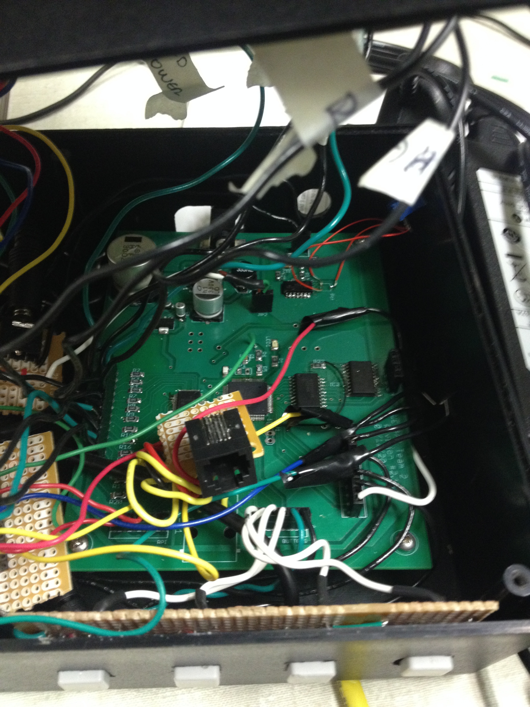
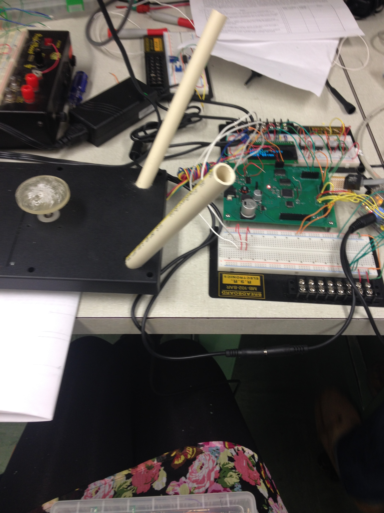
April 28, 2014 (5 hours): Worked with the pushbuttons and soldering them onto a proto board some more and organzing all the wires within the box. Today our raspberry pi died in which fried our microcontroller as well. This may be due to multiple reasons but my doubts are that it got to hot or too much current was going into the raspberry pi or that the raspberry pi was being shorted. Another suggestion could be due to our microcontroller burning out cause all the voltage to go to the raspberry pi. Therefore, a chip was placed in between our micro and our raspberry pi for this to not happen again.
April 29, 2014 (16 hours): Re-soldered on the micro, got all the packaging working together. One issue we had was that our LEDs would not work when we had our raspberry pi turned on and working. We spent many hours trying to figure out why we were getting such weird return codes, however we could not figure it out. In the end, I edited a video of our project working and packaged.
April 31, 2014 (1 hour): After looking more into why our LEDs were not working when trying to use our Raspberry Pi, we realized that they were both using the 5V power. This being said we started realizing that it must be a current issue. After taking some thought into it, we realized that the chip protecting our raspberry pi and micro was plugged into the 5V. When we switched that to a 3.3V power supply, everything started working together fine. We got all of our PSSCs checked off. Even though our project worked, one thing we were concerned about was that our motor kept getting hot.
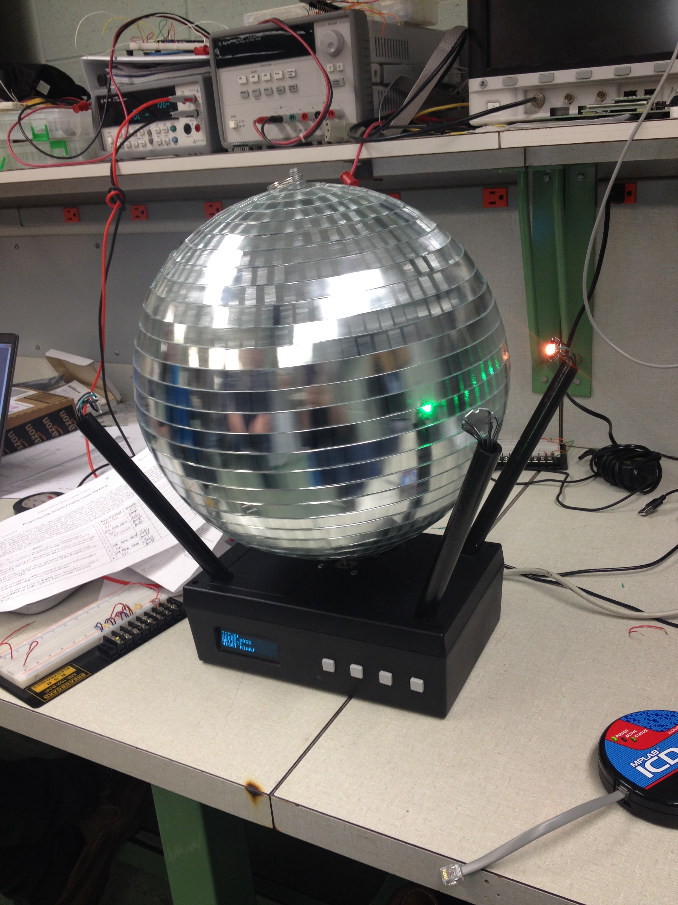
WEEK 16 SUMMARY Accomplishments: Our project was completed, all the PSSCs were checked off. We had some final hardware issues of not being able to supply enough current to our LEDs, but we got that figured out. Weekly Work Total: 24 hours Project Work Total: 195 hours